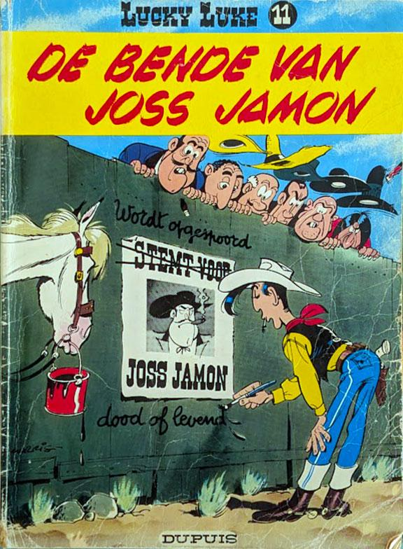
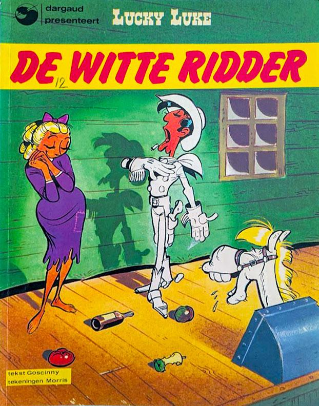

| A | B | C | D | E | F | G | H | I | J | K | L | |
|---|---|---|---|---|---|---|---|---|---|---|---|---|
1 | Afbeelding | nr | Titel | Serie | Reeks | Auteur | Bijzonderheden | Meer info | Druk | Conditie | prijs | Selecteer |
2 | 1 | Dick Diggers goudmijn | Lucky Luke | Dupuis | Morris | 1949 | | |||||
3 | 2 | Rodeo | Lucky Luke | Dupuis | Morris | 1950 | | |||||
4 | 3 | Arizona | Lucky Luke | Dupuis | Morris | 1951 | | |||||
5 | 4 | Avonturen in het westen | Lucky Luke | Dupuis | Morris | 1952 | | |||||
6 | 5 | Lucky Luke tegen Pat Poker | Lucky Luke | Dupuis | Morris | 1953 | | |||||
7 | 6 | Vogelvrij | Lucky Luke | Dupuis | Morris | 1954 | | |||||
8 | 7 | Dr. Doxey's elixer | Lucky Luke | Dupuis | Morris | 1955 | | |||||
9 | 8 | Phil IJzerdraad | Lucky Luke | Dupuis | Morris | 1957 | | |||||
10 | 9 | De spoorweg door de prairie | Lucky Luke | Dupuis | Morris en Goscinny | 1957 | | |||||
11 | 10 | Blauwvoeten op het oorlogspad | Lucky Luke | Dupuis | Morris | 1958 | | |||||
12 |  | 11 | De bende van Joss Jamon | Lucky Luke | Dupuis | Morris en Goscinny | 1958 | slecht | € 0,50 | |||
13 | 12 | De neven Dalton | Lucky Luke | Dupuis | Morris en Goscinny | 1959 | | |||||
14 | 13 | De rechter | Lucky Luke | Dupuis | Morris en Goscinny | 1959 | | |||||
15 | 14 | De trek naar Oklahoma | Lucky Luke | Dupuis | Morris en Goscinny | 1960 | | |||||
16 | 15 | De Daltons breken uit | Lucky Luke | Dupuis | Morris en Goscinny | 1960 | | |||||
17 | 16 | Bootrace op de Mississippi | Lucky Luke | Dupuis | Morris en Goscinny | 1961 | | |||||
18 | 17 | In het spoor van de Daltons | Lucky Luke | Dupuis | Morris en Goscinny | 1962 | | |||||
19 | 18 | In de schaduw der boortorens | Lucky Luke | Dupuis | Morris en Goscinny | 1962 | | |||||
20 | 19 | Naijver in Painful Gulch | Lucky Luke | Dupuis | Morris en Goscinny | 1962 | | |||||
21 | 20 | Billy the Kid | Lucky Luke | Dupuis | Morris en Goscinny | 1962 | | |||||
22 | 21 | De Zwarte Heuvels | Lucky Luke | Dupuis | Morris en Goscinny | 1963 | | |||||
23 | 22 | De Daltons in de blizzard | Lucky Luke | Dupuis | Morris en Goscinny | 1963 | | |||||
24 | 23 | De Daltons op vrije voeten | Lucky Luke | Dupuis | Morris en Goscinny | 1964 | | |||||
25 | 24 | De karavaan | Lucky Luke | Dupuis | Morris en Goscinny | 1964 | | |||||
26 | 25 | De spookstad | Lucky Luke | Dupuis | Morris en Goscinny | 1965 | | |||||
27 | 26 | De Daltons kopen zich vrij | Lucky Luke | Dupuis | Morris en Goscinny | 1965 | | |||||
28 | 27 | Het 20ste Cavalerie | Lucky Luke | Dupuis | Morris en Goscinny | 1966 | | |||||
29 | 28 | Het escorte | Lucky Luke | Dupuis | Morris en Goscinny | 1966 | | |||||
30 | 29 | Prikkeldraad in de prairie | Lucky Luke | Dupuis | Morris en Goscinny | 1967 | | |||||
31 | 30 | Calamity Jane | Lucky Luke | Dupuis | Morris en Goscinny | 1967 | | |||||
32 | 31 | Tortilla's voor de Daltons | Lucky Luke | Dupuis | Morris en Goscinny | 1967 | | |||||
33 | 1 | De postkoets | Lucky Luke | Dargaud | Morris en Goscinny | 1969 | | |||||
34 | 2 | Tenderfoot | Lucky Luke | Dargaud | Morris en Goscinny | 1970 | | |||||
35 | 3 | Dalton City | Lucky Luke | Dargaud | Morris en Goscinny | 1970 | | |||||
36 | 4 | Jesse James | Lucky Luke | Dargaud | Morris en Goscinny | 1971 | | |||||
37 | 5 | Western Circus | Lucky Luke | Dargaud | Morris en Goscinny | 1972 | | |||||
38 | 6 | Apache Canyon | Lucky Luke | Dargaud | Morris en Goscinny | 1973 | | |||||
39 | 7 | Ma Dalton | Lucky Luke | Dargaud | Morris en Goscinny | 1972 | | |||||
40 | 8 | De rijstoorlog | Lucky Luke | Dargaud | Morris en Goscinny | 1973 | | |||||
41 | 9 | De premiejager | Lucky Luke | Dargaud | Morris en Goscinny | 1974 | | |||||
42 | 10 | De Grootvorst | Lucky Luke | Dargaud | Morris en Goscinny | 1975 | | |||||
43 |  | 12 | De witte ridder | Lucky Luke | Dargaud | Morris en Goscinny | 1976 | slecht | € 0,50 | |||
44 | 11 | De erfenis van Rataplan | Lucky Luke | Dargaud | Morris en Goscinny | 1975 | | |||||
45 | 13 | De genezing van de Daltons | Lucky Luke | Dargaud | Morris en Goscinny | 1976 | | |||||
46 | 14 | Zijne keizerlijke hoogheid Smith | Lucky Luke | Dargaud | Morris en Goscinny | 1977 | | |||||
47 | 16 | De zingende draad | Lucky Luke | Dargaud | Morris en Goscinny | 1978 | | |||||
48 | 15 | Zeven korte verhalen | Lucky Luke | Dargaud | Morris en Goscinny | 1977 | | |||||
49 | 18 | De schat van de Daltons | Lucky Luke | Dargaud | Morris en Vicq | 1980 | | |||||
50 | 17 | De ballade van de Daltons | Lucky Luke | Dargaud | Morris, Greg en Goscinny | 1979 | | |||||
51 | 20 | De eenarmige bandiet | Lucky Luke | Dargaud | Morris en de Groot | 1981 | | |||||
52 | 21 | Sarah Bernhardt | Lucky Luke | Dargaud | Morris, Fauche en Léturgie | 1982 | | |||||
53 | 19 | De strop van de gehangene | Lucky Luke | Dargaud | Morris, Vicq, de Groot en Goscinny | 1981 | | |||||
54 | 22 | Daisy Town | Lucky Luke | Dargaud | Morris en Goscinny | 1983 | | |||||
55 | 23 | Fingers | Lucky Luke | Dargaud | Morris en Lo Hartog Van Banda | 1983 | | |||||
56 | 24 | The Daily Star | Lucky Luke | Dargaud | Morris, Fauche en Léturgie | 1984 | | |||||
57 | 25 | De verloofde van Lucky Luke | Lucky Luke | Dargaud | Morris en Vidal | 1985 | | |||||
58 | 27 | Nitroglycerine | Lucky Luke | Dargaud | Morris en Lo Hartog Van Banda | 1987 | | |||||
59 | 26 | De duivelsranch | Lucky Luke | Dargaud | Morris, Janvier en Guylouis | 1986 | | |||||
60 | 28 | Het alibi | Lucky Luke | Dargaud | Morris en Guylouis | 1987 | | |||||
61 | 29 | De Pony Express | Lucky Luke | Dargaud | Fauche en Léturgie | 1988 | | |||||
62 | 30 | De Daltons verliezen hun geheugen | Lucky Luke | Lucky Productions | Morris, Fauche en Léturgie | 1991 | | |||||
63 | 31 | Spokenjacht | Lucky Luke | Lucky Productions | Morris en Lo Hartog Van Banda | 1992 | | |||||
64 | 32 | De Daltons op de bruiloft | Lucky Luke | Lucky Productions | Morris, Fauche en Léturgie | 1993 | | |||||
65 | 33 | De brug over de Mississippi | Lucky Luke | Lucky Productions | Morris, Fauche en Léturgie | 1994 | | |||||
66 | 34 | Kid Lucky | Lucky Luke | Lucky Productions | Morris, Léturgie en Pearce | 1995 | | |||||
67 | 35 | Belle Starr | Lucky Luke | Lucky Productions | Morris en Fauche | 1995 | | |||||
68 | 36 | Klondike | Lucky Luke | Lucky Productions | Morris, Léturgie en Yann | 1996 | | |||||
69 | 37 | O.K. Corral | Lucky Luke | Lucky Productions | Morris, Fauche en Adam | 1997 | | |||||
70 | 38 | Oklahoma Jim | Lucky Luke | Lucky Productions | Morris, Convard en Pearce | 2003 | | |||||
71 | 39 | Marcel Dalton | Lucky Luke | Lucky Productions | Morris en de Groot | 1999 | | |||||
72 | 40 | De profeet | Lucky Luke | Lucky Comics | Morris en Nordmann | 2001 | | |||||
73 | 41 | De kunstschilder | Lucky Luke | Lucky Comics | Morris en de Groot | 2001 | | |||||
74 | 42 | De legende van het westen | Lucky Luke | Lucky Comics | Morris en Nordmann | 2002 | |